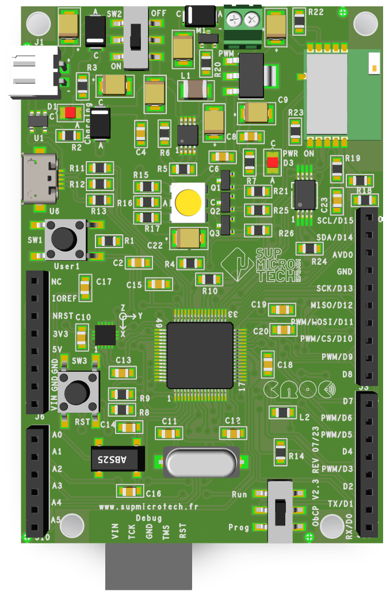

sur On pour allumer la carte
console (port COM virtuel) et chargement DFU
facultatif, caché par le shield ; maintenu au reset : profil tactile suivant
3,3 V sur l'ObCP : niveaux logiques du shield
LIS3DH ou LIS3DSH sur SPI3 : mode inclinaison
redémarre la carte
pas l'I2C sur l'ObCP (PC1, PC0) : laisser ouverts les ponts A4/A5 du shield
sonde ST-LINK (SWD), facultative
non utilisé : maintenu en reset (PC2)
éclair vert au démarrage ; rouge fixe : erreur grave
I2C1 (PB8, PB9) : tactiles FT62xx et TSC2007
SPI1 de l'écran ILI9341 ; D10 (PB6) : sa sélection
D/C de l'écran (PC7) ; sélection du STMPE610 (PA9)
sélection de la microSD du shield, maintenue à 1 (PB5)
sur Run ; sur Prog pour charger par USB (DFU)